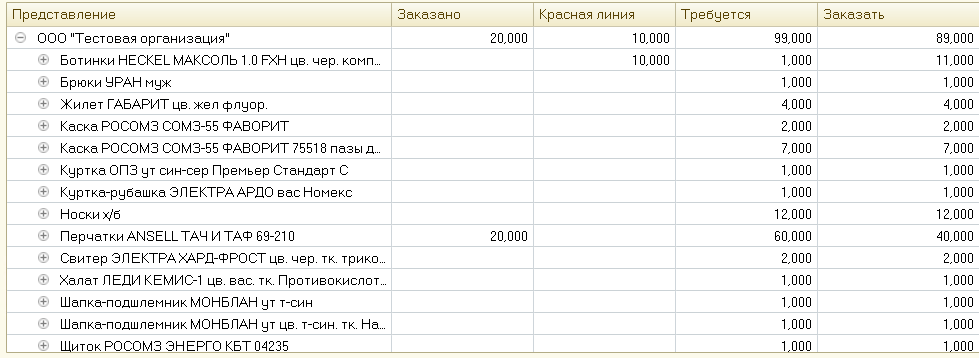

Формирование заказов поставщику
Обработка предназначена для формирования заказов на поставку спецодежды и СИЗ, на основании потребности сотрудников и остатков на складах.
Внимание! Использование обработки требует дополнительной проверки оператором после формирования заказа.
Рис.1
Вводим первоначальные данные (Рис.1)
1. Выбираем организацию
2. Указываем, какую информацию потребуется видеть на вспомогательных отчетах при формировании заказа (код синхронизации, артикул, номенклатурный номер или код товара, сформированный в 1С)
3. Задаем период, на который хотим осуществить заказ
4. Выбираем склады, остатки которых хотим учитывать при заказе.
Задав нужные параметры, необходимо выполнить предварительный анализ для расчета количества номенклатуры к заказу.
В нижней части обработки задаются фильтры. Обратите внимание, что обработка анализирует очень большой объем данных, в связи с этим процедуры выполняются долгое (в случае, если база большая – очень долгое) время. Рекомендуется выполнять анализ по частям (не на все данные сразу). Для этого предусмотрены фильтры по виду выдачи, по подразделениям, по МВЗ, по сотрудникам и по номенклатурам нормы. После установки фильтров нажимаем "Выполнить предварительный анализ" (Рис.2):
Рис.2
Фильтры нужно устанавливать слева направо, потому как в зависимости от установленных фильтров, набор значений в таблицах, стоящих справа, изменяется.
Например, если в таблице "Сотрудники" оставить только одного сотрудника, то в таблице, находящейся справа от нее (Номенклатуры нормы), останутся только те номенклатуры нормы, которые есть у выбранного сотрудника в установленных нормах.
Аналогично, если выбрать в столбце "Подразделения" ряд подразделений, то в таблицах справа останутся только те сотрудники, которые в этом подразделении устроены, те МВЗ, которые относятся к выбранным подразделениям и сотрудникам, те номенклатуры нормы, которые есть в установленных нормах для этих сотрудников.
У таблиц есть пиктограмма со стрелочками: , которая позволяет перемещать таблицы влево-вправо, тем самым упрощая процесс установки отборов
После нажатия на кнопку "Выполнить предварительный анализ" начнется процесс формирования заказа.
В результате в обработке появятся следующие вкладки (Рис.4):
Рис.4
1. Подобрано.
Сюда попадут те номенклатуры, которые есть в потребности у выбранных сотрудников в заданном периоде, и которые есть на остатках на складе (В заказ поставщику не попадут)
2. Не подобрано.
Сюда попадут те номенклатуры, которые есть в потребности у выбранных сотрудников в заданном периоде, и которых нет на остатках на складе (Попадут в заказ поставщику).
При необходимости можно вывести получившуюся таблицу для дальнейшего сохранения ее в Excel (Рис.5):

Рис.5
3. Не может быть подобрано.
Сюда попадут те нормы, по которым не может подобраться номенклатура выдачи.
Причины, по которым товар не может быть подобран:
А. На номенклатуру нормы не установлен маппинг.
Б. В существующем маппинге нет номенклатуры с подходящим полом.
В. У сотрудника нет антропометрии, при этом в номенклатуре выдачи, положенной сотруднику, есть размерный ряд
Г. У сотрудника установлена нестандартная антропометрия, которая не подходит ни для одной характеристики товара, установленного в соответствие маппингом
Чтобы заказ был корректным, необходимо избавиться от записей в таблице "Не может быть подобрано". То есть привести данные к такому виду, чтобы программа могла понять, какой товар какому сотруднику положен.
Из этого раздела можно создать документ «Установка соответствия номенклатуры выдачи» (Рис.6):
Рис.6
4. Доступность СИЗ.
Содержит справочную информацию о доступности СИЗ в графическом и табличном виде
5. Остатки после подбора.
Содержит информацию о количестве товара, которое останется на складах после обеспечения сотрудников товаром из графы "Подобрано" (вкладка 1).
6. Не задано МВЗ.
Содержит справочную информацию о сотрудниках, у которых не задано МВЗ.
При необходимости, можно перейти из вкладки в документ "Установка МВЗ подразделений" и установить МВЗ на нужные подразделения (Рис.7):
Рис.7
В случае если какие-то изменения были внесены в базу после анализа вышеописанных шести вкладок, требуется выполнить предварительный анализ повторно.
После этого можно переходить к формированию заказа. Для этого переходим на вкладку "Формирование заказов поставщику"(Рис.8):
Рис.8
Заполнится табличная часть (Рис.9)
1. Указываем склад, на который будет осуществляться поступление
2. Указываем поставщиков, номенклатуры которых требуется заказать.
Внимание! Вместо товаров от "выключенного" поставщика не будет подобран товар поставщика, который остался в списке. Просто закажется меньше товаров.
Рис.9
После этого нажимаем "Выполнить анализ для формирования заказов":
1. "Заказано" – количество этого товара, заказанного на тот же самый (или пересекающийся) период
2. "Красная линия" – количество, указанное в разделе "Красная линия" для этого товара (количество, которое обязательно должно быть на остатках)
3. "Требуется" – количество, которое должно быть заказано без учета красной линии и ранее заказнного
4. "Заказано" – количество, которое будет добавлено в документ "Заказ поставщику" с учетом уже заказанного товара и красной линии (Рис.10)

Рис.10
Есть возможность распечатать уже существующие на текущий момент заказы и заказы, которые сформируются из обработки нажатием на "Печать заказов" (Рис.11):
Рис.11
И, наконец, сформировать заказы поставщику нажатием на "Сформировать заказы" (Рис.12):
Рис.12
Сформируются заказы поставщику с разбиением по месяцам и по поставщикам